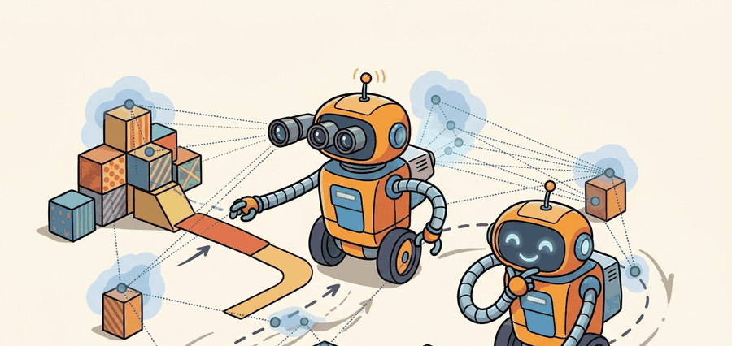

"SLAM is memory under cross-examination by geometry."
A Loop Closure That Came Back With Receipts

This section assumes familiarity with odometry error accumulation from section 29.2 and with the occupancy representation that the optimized poses feed into from section 29.4. The graph-optimization and loop-closure ideas developed here are extended in section 29.6, where neural and Gaussian-splat SLAM replaces hand-crafted feature pipelines with learned representations. The same factor-graph contract recurs in section 47.7 alongside GPS-denied drone mission planning, where visual-inertial odometry and loop closure become the only source of global consistency.
A delivery robot navigates a warehouse for twenty minutes, then rounds a corner and recognizes a shelf it passed at minute three. That recognition is not just useful: it is the moment the entire trajectory snaps into global consistency, correcting ten meters of accumulated drift in a single optimizer pass. Graph-based and visual SLAM is how robots manufacture that moment reliably. With cameras replacing expensive lidar on the newest mobile platforms, visual SLAM is now (as of 2024) the dominant path to cheap, scalable autonomy. Here you will build and debug a full pose-graph pipeline, learn to distinguish a genuine loop closure from a false one, and understand exactly why a wrong association can silently bend an entire map.
Problem First
Frame-by-frame correction is too local when the robot revisits a place after a long loop. A loop closure says that two far-apart timestamps are actually nearby in space, and this is called global trajectory snapping, which can bend the entire trajectory into consistency.
Graph SLAM represents poses and landmarks as variables and measurements as factors. Visual SLAM adds feature tracking, keyframes, bundle adjustment, and relocalization. The optimizer minimizes residuals weighted by measurement covariance, so a bad association can pull the whole graph into a convincing but false solution.
Keyframes matter physically because a robot running at 30 Hz would accumulate tens of thousands of pose nodes per minute, overwhelming memory and making real-time optimization impossible on embedded hardware. Selecting only a sparse subset keeps the graph tractable and forces the system to commit to which observations are worth retaining for loop closure, directly affecting whether the robot can correct drift before it reaches a doorway or a shelf edge.
A frame is promoted to a keyframe when it differs enough from the last keyframe, measured by the number of tracked feature matches that survive between the two frames or by the distance and rotation the camera has moved. Once selected, the keyframe stores its descriptors, 3D landmark positions, and pose estimate; subsequent optimization factors connect keyframes rather than every raw frame, so the graph stays sparse while preserving the geometric observations needed for loop closure.
A SLAM result is incomplete without factor definitions, association policy, loop-closure thresholds, residual plots, uncertainty, map export frame, and the downstream planner using the map.
Formal Model
For graph-based and visual SLAM, the posterior is a factor graph over poses, landmarks, feature tracks, and loop closures. Its deployable form is a graph with residuals, covariances, robust costs, and rejected associations.
$$ x^*=\arg\min_x \sum_k \|r_k(x)\|_{\Omega_k}^{2},\quad \|r\|_{\Omega}^{2}=r^\top\Omega r $$
The evidence terms are odometry factors, visual or scan factors, landmark observations, loop closures, and priors. The estimate becomes trustworthy only when large residuals and suspect closures remain inspectable rather than hidden by a polished trajectory.
To see why loop closure matters globally: consider a robot that drifts 0.5 m per 10 m traveled over a 200 m loop. By the time it returns to the start, accumulated odometry error places its estimated position roughly 10 m from the true start. A correct loop closure adds a factor constraining the current pose to match the initial pose, and the optimizer redistributes that 10 m correction across all 200 m of trajectory nodes, each shifting slightly. Without the closure, every downstream planning query over that map inherits the uncorrected drift. With a false closure of similar apparent confidence, the same redistribution mechanism applies, bending the entire trajectory in the wrong direction.
Think of the pose graph as a string of beads laid in a rough circle on a table, each bead connected to its neighbors by short elastic bands. The loop closure is like pinching the first and last bead together: the tension you apply at that single pinch point is shared by every elastic band along the entire string, and all the beads shift a little so the whole necklace closes smoothly into a circle. Pinch in the wrong place and every bead moves to the wrong position, yet the string still looks like a neat circle, which is why a false loop closure is so dangerous: the result appears globally consistent while being globally wrong.
- Select keyframes or pose nodes that summarize the trajectory.
- Create odometry, landmark, scan-match, visual feature, and loop-closure factors.
- Reject weak data associations with geometric and appearance checks.
- Optimize the pose graph, then inspect residual histograms and loop-closure influence.
Worked Diagnostic
Code Fragment 1 is the graph-SLAM sanity check: add a small set of factors, inspect residuals before and after optimization, and verify that a false closure would be visible.
# Compare two residuals with different information weights.
# High-confidence loop closures should matter more only when association is correct.
import numpy as np
residuals = np.array([0.20, 1.00])
information = np.array([25.0, 4.0])
weighted_cost = np.sum(information * residuals ** 2)
print(f"weighted_cost={weighted_cost:.2f}")
print(f"largest_term={np.argmax(information * residuals ** 2)}")Expected output interpretation. The second factor dominates the objective even though its information weight is lower, because its residual is much larger. The output should be read as a loop-closure sanity check: a single bad association can outweigh several small nominal residuals and bend the optimized trajectory unless robust loss or outlier rejection intervenes.
Tool Workflow
GTSAM and Ceres provide the nonlinear optimization machinery, while ORB-SLAM3, RTAB-Map, Kimera, and related systems package front ends, loop closure, and map maintenance. The shortcut replaces a full optimizer and visual pipeline with maintained APIs and configuration.
Use the hand factor example to expose residuals and Jacobian intuition, then use GTSAM, Ceres, ORB-SLAM-style systems, or Kimera for real logs. The hand calculation remains the guard against blind optimizer trust.
Replay with feature dropout, repeated texture, false loop closure, rolling-shutter motion, and delayed transforms as separate perturbations. The failure label should distinguish front-end association errors from back-end optimization and calibration issues.
Students often assume that visual SLAM simply pauses during a period of feature dropout and resumes cleanly once texture returns, as if tracking loss were a brief gap in an otherwise continuous record. This is wrong in embodied AI contexts because a tracking failure severs the front-end's continuity: the system loses its incremental pose prior and must perform relocalization, which matches the current frame against the entire stored map database rather than just the previous keyframe. Relocalization is orders of magnitude more expensive, can fail outright in featureless corridors or under sudden illumination changes, and on failure leaves the robot operating with an unanchored local odometry estimate that drifts freely until a closure is found. The correct mental model is that uninterrupted tracking is a load-bearing assumption of visual SLAM: design the robot's camera exposure, motion speed, and environment lighting to prevent dropout rather than relying on relocalization as a routine recovery mechanism.
When building a custom pose-graph pipeline with GTSAM, wrap every loop-closure factor in a gtsam.noiseModel.Robust.Create(gtsam.noiseModel.mEstimator.Huber(1.345), base_noise) robust noise model rather than a plain Gaussian. The Huber threshold of 1.345 is the standard 95%-efficiency value for Gaussian inliers; factors whose residual exceeds it are down-weighted automatically so a single false closure cannot dominate the objective. Switching to a Cauchy or Geman-McClure estimator tightens rejection further but can stall convergence on large graphs, so prefer Huber as the default and only switch after inspecting residual histograms.
A single false loop closure breaks the entire optimized trajectory, not just the local area near the closure. Because the back-end distributes the correction across all connected poses to minimize global residuals, a wrong closure pulls distant, correctly-estimated nodes off their true positions. ORB-SLAM3, for instance, uses a geometric verification step (Horn's method on matched 3D points) to reject perceptually similar but geometrically inconsistent candidates before they enter the graph; skipping that verification in a custom pipeline is the most common cause of globally-deformed maps that look locally smooth.
A warehouse SLAM artifact should include feature tracks or scan matches, factor graph, residual histogram, loop-closure decisions, optimized poses, covariance summary, and planner map export. That record shows whether a beautiful map is geometrically supported.
Foundation-model place recognition (2024-2025). Large vision encoders trained on internet-scale data are replacing hand-crafted descriptors for loop-closure retrieval. AnyLoc (Singh et al., ICRA 2024) shows that DINOv2 features extracted without any SLAM-specific fine-tuning outperform NetVLAD on indoor, outdoor, and underground environments simultaneously, the first single descriptor reported (as of 2024) to generalize across all three. This removes the need to retrain a retrieval network when deploying on a new robot platform.
Gaussian-splatting map representations for relocalization (2024-2026). 3D Gaussian Splatting is being integrated into the SLAM back-end so that the map is a renderable scene model rather than a sparse point cloud. SplaTAM (Keetha et al., CVPR 2024) demonstrates dense RGB-D SLAM where loop closure is verified by rendering the candidate viewpoint from the Gaussian map and comparing photometric error, replacing descriptor matching entirely and giving a continuous confidence signal instead of a binary geometric check.
Lifelong map maintenance under scene change (2025-2026). Static-map assumptions fail over days and weeks as furniture moves, construction closes corridors, and seasons alter outdoor scenes. The MapEx line of work (MIT CSAIL, 2025) treats the pose graph as incrementally patchable: changed regions are detected via photometric inconsistency, the affected subgraph is excised and re-mapped, and old keyframes are deleted to bound memory, all without restarting the session. This is an unsolved systems problem for indoor service robots that must operate across shift changes in hospitals or warehouses.
Open problem for PhD research. When a Gaussian-splat map and a classical sparse-feature map coexist for the same environment (one built by a mapping pass, one built incrementally during deployment), there is no principled method to merge their loop-closure decisions when they disagree. The open question is how to formulate a joint factor graph over both representations so that photometric evidence from the Gaussian model and geometric evidence from the sparse graph are combined with calibrated relative weights, enabling a robot to trust the richer signal without letting a saturated scene (over-exposed corridor) in the Gaussian renderer silently suppress a correct sparse-feature closure.
SLAM is memory under cross-examination by geometry.
Can you state the state variables, observation residual, uncertainty representation, replay artifact, and most likely field failure for graph-based and visual slam? If one field is vague, the estimator is not ready for embodied use.
Graph-based and visual SLAM is production-ready only when geometry, uncertainty, timing, and action consequences are tested together.
Run one loop with a true revisit and one with perceptual aliasing. Report accepted closures, residual change, trajectory jump, map deformation, and the navigation effect of accepting or rejecting the closure.
Project Ideas
Beginner (weekend): Build a minimal 2D pose-graph SLAM simulator in Python using GTSAM: generate a synthetic robot trajectory with odometry noise, add a single ground-truth loop-closure factor, and visualize how the optimizer redistributes drift correction across all nodes before and after the closure. The key challenge is correctly constructing the between-factors with appropriate noise models so the optimizer converges rather than diverging on a poorly conditioned graph. Intermediate (1-2 weeks): Run ORB-SLAM3 on a ROS2 bag recorded from a simulated Clearpath Jackal in PyBullet or a MuJoCo scene, then deliberately introduce a perceptual aliasing scenario (two visually identical corridors) and instrument the system to log every candidate loop closure, its geometric verification outcome, and the resulting map deformation. The key challenge is tuning the DBoW2 similarity threshold and the Horn-method geometric verification so that true closures are accepted while false positives from the repeated texture are rejected without breaking real-time performance.
What's Next?
Continue to Section 29.6: Neural and Gaussian-splat SLAM, where this state-estimation contract becomes the input to the next embodied capability.
Section References
Durrant-Whyte, H. and Bailey, T. "Simultaneous Localization and Mapping." IEEE Robotics and Automation Magazine, 2006. https://ieeexplore.ieee.org/document/1638022
Classic SLAM tutorial that frames the estimation problem and the role of uncertainty.
GTSAM Project. "Factor Graphs and GTSAM." Official documentation. https://gtsam.org/
Primary tool reference for factor graphs, smoothing, pose graphs, and robotics estimation examples.
ROS 2 Navigation Project. "Nav2 documentation." Official documentation. https://navigation.ros.org/
Primary documentation for integrating localization, maps, planners, controllers, behavior trees, and recoveries.